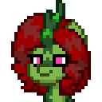

MareTF
A utility to create, edit, and display every type of VTF file ever made.
Created by craftablescience, with contributions from many lovely people.

Features
Create
-
Directly convert a wide range of input image formats
- Animated images (APNG/GIF)
- Floating point images (EXR/HDR)
- Standard images (PNG/JPG/TGA/WebP)
- Esoteric images (QOI/PSD/PGM/PPM/PIC/BMP)
- Create non-power of two textures
- Create cubemaps from HDRIs
-
Create console VTFs
- Original Xbox
- Xbox 360
- PlayStation 3
- Uses an improved version of Valve's NICE mipmap filtering by default
- Supports new formats in Alien Swarm and beyond, Titanfall 1/2, Strata Source
- Supports new Strata Source VTF version with CPU compression (Deflate / Zstd)
- Watch input file or directory for changes and recreate the VTF(s)
Edit
- Edit existing VTFs
- Change VTF version, format, platform, etc.
- Recompute mipmaps, thumbnail, reflectivity vector
- Add, overwrite, or remove resources
Extract
- Save the image data contained within VTFs as image files
-
Save as PNG/JPEG/BMP/TGA/WebP/QOI/HDR/EXR
- Defaults to PNG or EXR based on the image format
Info
- Print out all VTF metadata and non-image resource data
- Parse compiled particle sheet resource to plaintext
- Print data as colored human-readable text or as plain KeyValues
Thumbnail
- Display thumbnails for all VTF platforms and versions on Windows and Linux in your file explorer of choice

Special Thanks
Assets
- The kirin in the program logo (Olive Shade) was created with pony.town's character creator
- The lovely GUI splash screen art is by @pastacrylic
Dependencies